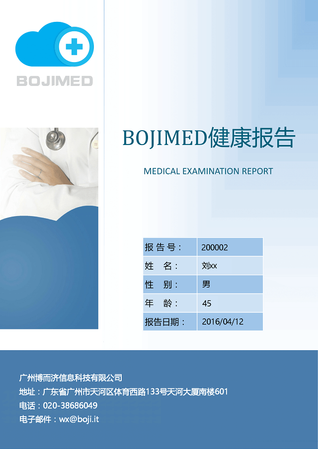

判断标准及建议内容经广东临床医师协会审核
第1页
判断标准及建议内容经广东临床医师协会审核
第1页
尊敬的刘XX先生：
您好！
感谢您对我们的信任和支持。现将您健康报告呈上，希望能为维护您 的健康提供参考。
报告阅读说明：
您本次健康报告由健康信息、健康检测主要指标汇总及专家指导建议 和健康知识等部分组成。
判断标准及建议内容经广东临床医师协会审核
第2页
健康检测数据是您在使用健康检测设备时所采集到的结果，不能覆盖 人体全部器官及全部指标。而且与您所使用的健康设备类型和使用方式、 使用频率有很大关系，所以这些数据仅能部分反应您的健康状况。可以作 为参考，但不具有诊断意义。
本健康报告由广东临床医师协会审核，但由于健康数据数量较少，且 缺乏诊断意义，故本报告仅能大致反应您近期健康状况，不能取代临床医 学报告。如您有不适症状，请务必及时到医院就诊。
判断标准及建议内容经广东临床医师协会审核
第3页
| 检查项目 | 提示 | 结果 | 单位 | 正常参考值 | |
|---|---|---|---|---|---|
| 身高 | 172 | cm | |||
| 体重 | 90 | kg | |||
| 体重指数 | ↑ | 30.4 | Kg/m2 | 18.5-23.9 | |
| 运动量 | 10001 | 步 | 10000 | ||
| 睡眠质量 |
| 类别 | 有无 | 时间 | 详情 | ||
|---|---|---|---|---|---|
| 饮酒史 | 有 | 24年 | 每月2次 | ||
| 吸烟史 | 有 | 25年 | 每月10包 | ||
| 过敏史 | 无 |
判断标准及建议内容经广东临床医师协会审核
第4页
| 疾病种类 | 有无 | 严重程度 | 有无就诊 | 控制方法 | |
|---|---|---|---|---|---|
| 高血压 | 有 | 一般 | 无 | 无 | |
| 哮喘病 | 无 | ||||
| 冠心病 | 无 | ||||
| 糖尿病 | 无 |
| 疾病种类 | 有无 | 疾病种类 | 有无 | 疾病种类 | 有无 |
|---|---|---|---|---|---|
| 高血压 | 有 | ||||
| 哮喘病 | 无 | ||||
| 冠心病 | 无 | ||||
| 糖尿病 | 无 |
判断标准及建议内容经广东临床医师协会审核
第5页
| 检测时间 | 提示 | 检测结果 | 单位 | |
|---|---|---|---|---|
| 舒张压 | 收缩压 | |||
| 2016-3-11 9:12 | ↑ | 90 | 133 | mmHg |
| 2016-3-11 9:14 | ↑ | 91 | 133 | mmHg |
| 2016-3-11 9:27 | ↑ | 93 | 139 | mmHg |
| 2016-3-11 9:32 | ↑ | 93 | 138 | mmHg |
| 2016-3-11 9:36 | ↑ | 92 | 131 | mmHg |
| 2016-3-11 9:44 | ↑ | 97 | 138 | mmHg |
| 2016-3-11 10:30 | 90 | 126 | mmHg | |
血压小知识：孕妇血压高？快补钙！
判断标准及建议内容经广东临床医师协会审核
第6页
妊娠期高血压在我国的发病率为9.4%，多数是只是妊娠期出现，分娩后自行消失。可这短期出 现的高血压，一到了妊娠期间就成为了严重危害母婴健康的杀手。引发妊娠期高血压的并非单一病 因，免疫机制、遗传因素等都参与其中。但可控制并用于预防妊娠期高血压的因素是，营养学方面 的研究结果。即，妊娠期高血压患者细胞内钙离子增多，而血清钙却下降。而当血液中钙离子浓度 过低时，肌肉尤其是平滑肌就会非常容易兴奋，发生痉挛。血管平滑肌细胞一兴奋痉挛，血压就升 高。于是补钙就成为了妊娠期预防高血压的最好办法。
通过补钙来预防妊娠期高血压，实在是一种既有效又经济的方法。不过，凡事过犹不及，可不要补 过了头。如果能多吃含钙质丰富的食物，那钙剂可少量补充。如果能吃到的食物含钙不那么丰富， 就可多补充钙剂。
判断标准及建议内容经广东临床医师协会审核
第7页
| 检测时间 | 提示 | 检测结果 | 单位 | 正常下限 | 正常上限 |
|---|---|---|---|---|---|
| 2016-3-11 15:17 | ↑ | 7.64 | mmol/L | 3.9 | 6.1 |
| 2016-3-11 15:19 | 5.51 | mmol/L | 3.9 | 6.1 | |
| 2016-3-11 15:27 | 4.25 | mmol/L | 3.9 | 6.1 | |
| 2016-3-11 15:33 | 4.92 | mmol/L | 3.9 | 6.1 |
血糖小知识：过量食用荔枝为什么会引起低血糖？
每年到荔枝大规模上市的时候，就会看见类似“荔枝病”新闻，究竟荔枝病是怎么回事呢?
判断标准及建议内容经广东临床医师协会审核
第8页
首先，荔枝病的发生，主要的触发因素是果糖。有人曾做过动物实验，7次果糖耐量和葡萄糖 耐量对比实验中，注射果糖1小时后出现葡萄糖低峰值，均显著低于注射前的浓度水平。显然在大 量摄入果糖后，确实有可能会导致血糖降低。果糖导致血糖下降的主要原因是因为果糖代谢经果糖 激酶形成果糖-1-磷酸，果糖-1-磷酸可以竞争性抑制葡萄糖激酶和调控蛋白的结合，从而导致葡萄 糖激酶活力增加，引起血糖下降。而胰岛素实际是整个事件的帮凶，对于荔枝来说并不仅仅全是果 糖，以妃子笑为例，果糖，葡萄糖，蔗糖的含量为6.3%，5.9%，5.2%。荔枝中大量的葡萄糖，在已 经处于血糖较低的情况下，通过GLUT2刺激胰岛β细胞分泌胰岛素，就可能会造成低血糖症。
所以想靠“果糖”来控制血糖稳定，甚至想应用于糖尿病上面的话，不 仅血糖不一定会得到控制，反而会因为果糖大量摄入导致脂肪合成。
判断标准及建议内容经广东临床医师协会审核
第9页
| 检测时间 | 提示 | 检测结果 | 单位 | 正常下限 | 正常上限 |
|---|---|---|---|---|---|
| 2016-3-11 17:12 | 94 | % | 95 | 99 | |
| 2016-3-11 17:14 | 95 | % | 95 | 99 | |
| 2016-3-11 17:17 | 97 | % | 95 | 99 | |
| 2016-3-11 17:33 | 97 | % | 95 | 99 | |
| 2016-3-11 17:36 | 96 | % | 95 | 99 | |
| 2016-3-11 17:44 | 96 | % | 95 | 99 |
血氧小知识：血氧含量对生命体征的意义
判断标准及建议内容经广东临床医师协会审核
第10页
血液主要有两个方面的作用，一是为身体的各个器官供应营养物质；而是供应氧气。氧气主要 有两种方溶解在血液中，一是物理溶解，不过这种含量极少，占1.5%，二是靠与血液红细胞中的血 红蛋白结合而携氧，这种占绝大部分占98.5%。血氧饱和度的意义就是红细胞中氧化的血红蛋白占 全部血红蛋白的比例，代表的是机体的携氧能力。因为氧气是参与有氧呼吸，为机体提供新陈代谢 能量的重要物质，所以这个值非常重要。临床上常监测重病人的动脉血氧饱和度，低于94%为低氧 气。
一般来说，正常人的血氧饱和度往往在94%以上。低于80%有危险，这时可以看到病人嘴唇发 紫，是机体缺氧的表现。低于75%往往需要气管切开或者带无创呼吸机，或者上呼吸机，由机器辅 助呼吸。
判断标准及建议内容经广东临床医师协会审核
第11页
| 检测时间 | 提示 | 检测结果 | 单位 | 正常下限 | 正常上限 |
|---|---|---|---|---|---|
| 2016-3-11 17:22 | 36.9 | °C | 36 | 37.5 | |
| 2016-3-11 17:27 | 36.8 | °C | 36 | 37.5 | |
| 2016-3-11 17:33 | 36.4 | °C | 36 | 37.5 | |
| 2016-3-11 17:39 | 36.4 | °C | 36 | 37.5 |
体温小知识：婴儿发烧，要不要用退烧药？
判断标准及建议内容经广东临床医师协会审核
第12页
什么时候给孩子用退烧药呢？每个孩子对发烧的耐受能力不一样，所以用药的时机也可以不一 样。中国指南推荐体温38.5度时就可以用，美国的建议是体温超过39.0度可以用，据悉这样的推荐 并没有什么数据支持，只是专家们觉得到了这个温度大部分孩子会不舒服，就可以用药。药物的作 用就是缓解症状，所以最主要还是看孩子的精神状态和症状表现。
因为退烧药也会有副作用，所以不推荐在体温38.5度以下时给没有其他基础疾病的孩子用药。 不过，对于有心肺功能不全、贫血、糖尿病或遗传代谢性疾病的孩子，考虑到发烧会加快代谢，也 会增加氧气的消耗量、产生更多二氧化碳并增加心输出量，为了避免心衰、代谢不稳定的情况发 生，可以在体温达到38.5度之前提早用药。发烧也容易诱发癫痫发作，所以有癫痫的孩子也应该更 早给药。
判断标准及建议内容经广东临床医师协会审核
第13页
| 检测时间 | 提示 | 检测结果 | 单位 | 正常下限 | 正常上限 |
|---|---|---|---|---|---|
| 2016-3-11 17:12 | 73 | 次/分 | 60 | 100 | |
| 2016-3-11 17:14 | 79 | 次/分 | 60 | 100 | |
| 2016-3-11 17:17 | 72 | 次/分 | 60 | 100 | |
| 2016-3-11 17:33 | 75 | 次/分 | 60 | 100 | |
| 2016-3-11 17:36 | 73 | 次/分 | 60 | 100 | |
| 2016-3-11 17:44 | 72 | 次/分 | 60 | 100 |
心率小知识：什么是最大心率
判断标准及建议内容经广东临床医师协会审核
第14页
最大心率，指进行运动负荷时,随着运动量的增加,耗氧量和心率也增加,在最大负荷强度时,耗氧 量和心率不能继续增加时心率达到的最高水平。目前我们所知最多的最大心率公式是：HRmax （最大心率）=220-年龄。嗯，确实比较好算，不过后人对于该公式的适用性、准确性和效用 都比较怀疑。现在国外宣传较多的最大心率公式应该是HRmax=208-0.7*年龄。该公式研究的样本 很多，文献总结了18712个样本。此外，我国学者对于该公式也进行了相关监测，证明其对于国人 也较准确。
同时，由于肥胖者的最大心率一般低于普通人，一些研究者认为肥胖者应该用HRmax=200- 0.5*年龄来推算自己的最大心率。这种相对精确的计算方式也有助于体重较高的人群循序渐进，可 以优化自己的训练内容。不过想要准确知道自己最大心率的同学，还是建议去专业机构测一下.
判断标准及建议内容经广东临床医师协会审核
第15页
建议与指导
尊敬的 刘XX 先生：
首先，感谢您对我们的信任。您最近总体健康状况良好，运动量和睡眠质量令人满意，您上个 月的健康状况总体可以打80分，在同龄人中属于较好水平。鉴于您有高血压家族史、糖尿病家族 史、冠心病家族史，您需要坚持好的生活习惯，我们真诚的相信您的身体会一直保持健康状态。
您的体重指数为30.4，属于肥胖人群。请您注意控制饮食，适当锻炼，来达到控制体重效果， 需要注意避免剧烈运动，对您的健康会有更大的好处。
判断标准及建议内容经广东临床医师协会审核
第16页
您在上个月里共进行了7次血压检测，您对自己的健康十分关注，再接再厉。其中共有1次测量 结果属于正常值，您患高血压风险较高，鉴于您属于肥胖人群、有高血压家族史、多年吸烟史、多 年饮酒史，我们真诚的提醒您注意经常检测血压，并尽快去医院就诊。
您在上个月里共进行了6次血氧检测，您对自己的健康十分关注，再接再厉。其中共有6次测量 结果属于正常值，您血氧状况良好，无家族哮喘病史，希望能继续保持下去。
您的其他检测结果未见异常。请注意改变生活习惯，坚持定期进行体检，对您的 健康会有帮助。
判断标准及建议内容经广东临床医师协会审核
第17页
本月健康建议
一、改变生活习惯：
1、饮食宜清淡、限盐（小于5克/日）、增钾，多食芹菜、胡萝卜、青菜、五 谷、豆类等食物。
2、限烟、限酒。
3、保持良好情绪。
4、适度运动，控制体重。
二、及时就诊：
1、高血压病存在家族聚集现象，40岁之后出现疾病概率大幅度增加，您近期多 次血压测量都超出正常值范围，且您有多年吸烟饮酒史，建议您尽快去医院就诊，寻 求控制血压最佳方案。
2、广州市xx医院xx科xx医师下周有号，您可以通过医院官方微信号进行咨询及 挂号等。
判断标准及建议内容经广东临床医师协会审核
第18页